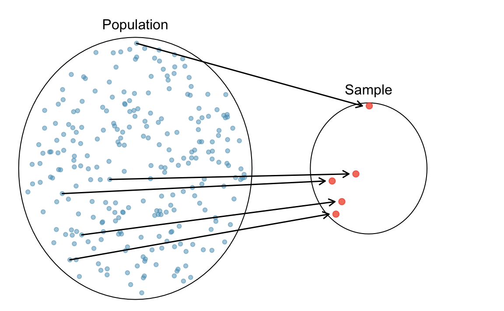
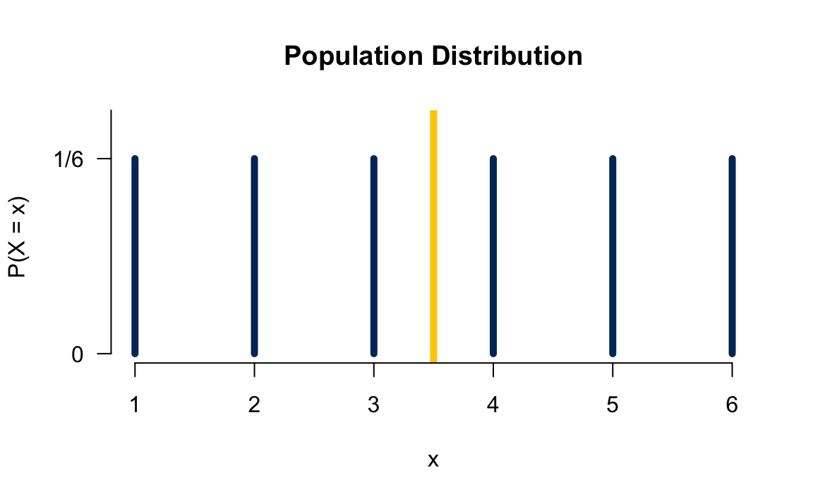
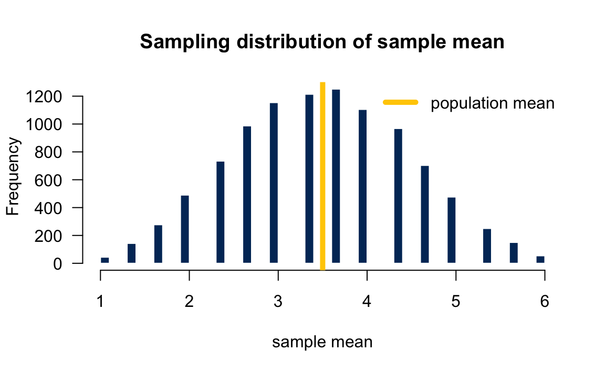

sample(x = bag_balls, size = 1)
# [1] "red"12 Random Sampling and Sampling Distribution
This chapter talks about sampling. When we sample, simulate, or draw a value of a random variable following some distribution, we get a realized value of that random variable that varies from sample to sample due to its random or stochastic property. Sampling techniques are used frequently in statistical inference and various fields of science, engineering, and mathematics. Here in particular, we talk about Monte Carlo simulation and sampling distribution. Other sampling methods for statistical inference, such as bootstrapping, will be discussed in Chapter 15.
12.1 Monte Carlo Simulation
From Wikipedia, there is no consensus on how Monte Carlo should be defined. In short, Monte Carlo simulation is a repeated random sampling method. Therefore, when using Monte Carlo method, we do not just simulate one single value, but generate numerous realized values of random variables. Also these values are generated with randomness.
Monte Carlo methods can be used to approximate the probability of some event happening. Take categorical data for example, once we collect the Monte Carlo samples, we can calculate the relative frequency of each category in the data, and use their relative frequency as the probability that a specific category happens when a sample is drawn from some target distribution.
Suppose there are 2 red balls and 3 blue ones in a bag. Apparently, if each ball is equally likely to be chosen (picking at random), and if we Do know in advance that 2 reds and 3 blues are in the bag, then the probability that a red ball is drawn is 2/5. The question is
The idea of Monte Carlo simulation is that we repeat the experiment (drawing a ball) a large number of times, then obtain the relative frequency of red ball to approximate the probability of getting a red ball.
Let me first create a vector bag_balls that saves the information about the color of ball in the bag. It’s there, but let’s just don’t see it at this moment.
In R, to randomly sample an element of a vector, we can use the function sample(). For example, the following code shows how to randomly draw a ball from that bag:
In Python, to randomly sample an element of a vector, we can use the function np.random.choice(). For example, the following code shows how to randomly draw a ball from that bag:
np.random.choice(bag_balls, size=1)
# array(['red'], dtype='<U4')It produces one random outcome. This time we get a red ball. We can (put the red ball back in to the bag) draw a ball again by running the code:
sample(x = bag_balls, size = 1)
# [1] "blue"This time we get a blue ball. To do a Monte Carlo simulation, we can use the replicate() function, which allows us to repeat the same job a number of times
The argument n is an integer indicating the number of replications. The argument expr is the expression (usually a function call) to evaluate repeatedly. Here I repeatedly draw a ball 100 times. The object mc_sim contains 100 colors collected from the bag of colored balls.
str(mc_sim)
# chr [1:100] "blue" "blue" "blue" "blue" "blue" "blue" "red" "blue" "red" ...How do we get the relative frequency of category? We can first check the frequency table or frequency distribution using table() function:
# mc_sim
# blue red
# 58 42To get the relative frequency, just divided by the total number of repetitions.
# mc_sim
# blue red
# 0.58 0.42np.random.choice(bag_balls, size=1)
# array(['blue'], dtype='<U4')This time we get a blue ball. To do a Monte Carlo simulation, we repeatedly draw one ball from the bag using a for loop within a list, so that the every draw is saved in a list.
In the code, range(100) creates a sequence of 100 integers from 0 to 99. Then for each integer, we call it i, we do the sampling np.random.choice(bag_balls). Every sampling result is wrapped up in a list [].
mc_sim = [np.random.choice(bag_balls) for i in range(100)]
mc_sim[0:10]
# ['blue', 'red', 'blue', 'blue', 'red', 'red', 'red', 'red', 'red', 'blue']How do we get the relative frequency of category? We can first turn a list into a pd.Series so that we can use the method value_count() to generate the frequency table or frequency distribution:
import pandas as pd
freq_table = pd.Series(mc_sim).value_counts()To get the relative frequency, just divided by the total number of repetitions.
freq_table / 100
# blue 0.63
# red 0.37
# Name: count, dtype: float64So if there are 5 balls in the bag, how many red balls in the bag? Well I would guess there are 2 red balls and 3 blue balls in the bag because the chance of getting a red ball is about 40%. We just demo a Monte Carlo simulation for categorical data.
It is important to know that Monte Carlo works better when the number of repetitions is large. When we repeatedly sample the value only few times, we may unluckily not be able see the entire picture of the target distribution, and get stuck in some part of the distribution. As a result, the Monte Carlo method cannot faithfully show the whole picture, leading to a biased approximation. In our example, notice that the first 6 random draws are all blue. If we just stop there, we may make a conclusion that the balls in the bag only have one color blue because we “never” see any other colors in our experiment. In this case, 6 samples are too small, and the “true color” has not shown. Again, generally it needs sufficiently large Monte Carlo samples to uncover the target distribution. When we repeatedly draw a ball 10,000 times, we have
Note that the relative frequency of red ball is now so close to the true probability 0.4. Now we are more sure that exactly two red balls in the bag!
12.2 Random Number Generation
When we do sampling using a computer, we use a so-called random number generator to generate a random outcome, and sampling results vary from sample to sample. This is why this time you get red, next time you get blue, and you don’t know you will get a blue or red next time you do the random sampling.
Interestingly, a computer cannot generate a pure random outcome, and a pseudorandom number generator is usually used to generate a sequence of numbers whose properties approximate the properties of sequences of truly random numbers. Because of this, we can actually control random generation results using a random seed. For example, if you set the seed at 2024, then every time you do random sampling, you always get the same sampling result.
To ensure the results are exactly the same every time you do sampling, in R we set the random seed to a specific number using the function set.seed().
Here we draw three balls at random. Because the two random seeds are identical, the two “random” sampling results are identical too.
The sample() function can actually draw lots of balls. But be careful about the with and without replacement issue. The default setting is draw without replacement. So when we try to draw 6 balls at once, it renders an error, saying cannot take a sample larger than the population when replace = FALSE.
sample(bag_balls, 6)
# Error in sample.int(length(x), size, replace, prob):
# cannot take a sample larger than the population when 'replace = FALSE'Basically we only 5 balls, without replacement, once a ball is drawn, the ball is out of bag, and only 4 balls remain in the bag. So without replacement, we can at most draw 5 balls, which is the “entire population”. If we wanna draw more than 5 times from the same bag, we got to specify replace = TRUE in the sample() function.
sample(bag_balls, 6, replace = TRUE)
# [1] "blue" "red" "blue" "red" "red" "red"W can actually do the Monte Carlo simulation using just the sample() function like sample(balls, size = B, replace = TRUE). This means that we return the ball back to the bag after drawing it, and we repeatedly draw a ball continually B times basically under the same conditions.
Not surprisingly, we get results very similar to those previously obtained using the replicate() function. Moreover, if we use the same random seed on sample() and replicate(), their sampling results will be the same:
To ensure the results are exactly the same every time you do sampling, in R we set the random seed to a specific number using the function np.random.seed().
Note that by default np.random.choice() does sampling with replacement. We need to set replace=False.
# Sampling three balls without replacement
np.random.seed(2024)
np.random.choice(bag_balls, size=3, replace=False)
# array(['red', 'blue', 'blue'], dtype='<U4')## same result!
np.random.seed(2024)
np.random.choice(bag_balls, size=3, replace=False)
# array(['red', 'blue', 'blue'], dtype='<U4')Here we draw three balls at random. Because the two random seeds are identical, the two “random” sampling results are identical too.
The np.random.choice() function can actually draw lots of balls. We only 5 balls, without replacement, once a ball is drawn, the ball is out of bag, and only 4 balls remain in the bag. So without replacement, we can at most draw 5 balls, which is the “entire population”. If we wanna draw more than 5 times from the same bag, we got to specify replace should be True (by default) in the np.random.choice() function.
# Sampling six balls with replacement
np.random.choice(bag_balls, size=6, replace=True)
# array(['blue', 'blue', 'red', 'red', 'blue', 'blue'], dtype='<U4')# Another Monte Carlo simulation with replacement
np.random.seed(1000)
mc_sim_rep = np.random.choice(bag_balls, size=100, replace=True)
pd.Series(mc_sim_rep).value_counts()
# blue 63
# red 37
# Name: count, dtype: int64Not surprisingly, we get results very similar to those previously obtained using the for loop within a list. Moreover, if we use the same random seed on np.random.choice(), their sampling results will be the same:
# Compare two methods
np.random.seed(2025)
mc1 = [np.random.choice(bag_balls) for i in range(100)]
pd.Series(mc1).value_counts()
# blue 58
# red 42
# Name: count, dtype: int64
np.random.seed(2025)
mc2 = np.random.choice(bag_balls, size=100, replace=True)
pd.Series(mc2).value_counts()
# blue 58
# red 42
# Name: count, dtype: int6412.3 Random Number Generation from Probability Distributions
Remember from the previous two chapters that we learn the dpqr family of functions for calculating probabilities, densities, and generating values from a probability distribution. To generate random values, we use rdist(n, ...). \(n\) is the number of observations we would like to generate. The ... denotes the required parameter values for the distribution being drawn from. For example,
rbinom(n, size, prob)generates \(n\) observations from the binomial distribution with the number of trials specified insizeand the probability of success specified inprob.rpois(n, lambda)generates \(n\) observations from the Poisson distribution with the parameterlambda.rnorm(n, mean = 0, sd = 1)generates \(n\) observations from the normal distribution with mean and standard deviation specified inmeanandsd. By default, the mean is zero, and the variance is one. Sornorm(5)draws five numbers from the standard normal distribution.
## the default mean = 0 and sd = 1 (standard normal)
rnorm(5)
# [1] 0.983 -0.409 -0.669 1.319 -1.085To generate random values, in Python we can use dist.rvs(..., size) from the scipy.stats module. size is the number of observations we would like to generate. The ... denotes the required parameter values for the distribution being drawn from. For example,
-
norm.rvs(loc, scale, size)generatessizeobservations from the normal distribution with mean and standard deviation specified inlocandscale. By default, the mean is zero, and the variance is one. Sonorm.rvs(size=5)draws five numbers from the standard normal distribution. Note that the wordsizecannot be skipped because it is the third argument. If we writenorm.rvs(5), the function will draw a number from a normal distribution with mean 5 and variance 1 \(N(5, 1)\).
from scipy.stats import norm
norm.rvs(size=5)
# array([-1.20602816, 1.30241414, -0.5761093 , 1.07786143, -0.64792117])
Note
NumPy offers np.random.randn() to sample from the standard normal distribution.
np.random.randn(5)
# array([-0.06048719, -1.09012056, 1.47339158, -1.9039995 , 1.81507773])All the 100 red points below are random draws from the standard normal distribution. You can see that most of the points are around the mean because the density around the mean is higher. Also, we can see when we draw normal samples, it is very difficult to get a sample with a very extreme value because its corresponding density value is quite small. Therefore, we tend to underestimate the population variance if we use the sample data to estimate it. And that’s one of the reason why we divided by \(n - 1\) in the sample variance formula to sort of correct this underestimation.
In statistics, we hope the sampled data to be as representative of population as possible. Suppose the population is normal. If the sample is a random sample, we hope the sample size to be large. The larger the sample size, the more representative of population the sample is.
When the sample size is just 20, you can see the sample data does not look very normal. When \(n = 200\), the sample start looking like a normal distribution. When \(n = 5000\), the sample is very representative of its population which follows standard normal distribution.
12.4 Why Use Sampling Distribution
When we do statistical inference, we assume each data point in the sample is drawn from the target population whose characteristic we focus is assumed to follow some probability distribution that is unknown to us. For example, suppose we would like to do inference about Marquette students’ mean height. We assume the student height follows a normal distribution \(N(\mu, \sigma^2)\) with \(\mu\) being unknown to us (\(\mu\) is what we would like to infer for). We collect our sample data, and assume each data point comes from the assumed distribution \(N(\mu, \sigma^2)\).
The sampling distribution is an important concept that connects probability and statistics together. We use the sampling distribution quite often, at least at the introductory level, to do statistical inference, and that’s why we need to learn what it is before doing statistical inference.
Parameter
Parameters in a probability distribution are the values describing the entire distribution. For example,
- Binomial: two parameters, \(n\) and \(\pi\)
- Poisson: one parameter, \(\lambda\)
- Normal: two parameters, \(\mu\) and \(\sigma\)
As long as we know the values of the parameters of some distribution, we are able to calculate any probability of the distribution, and describe the distribution exactly. The entire distribution is controlled solely by the few parameters.
In statistics, we usually assume our target population follows some distribution, but its parameters are unknown to us. For example, we may assume human weight follows \(N(\mu, \sigma^2)\) although we are not quite sure what its mean and/or variance is. We may think the number of snowstorms in one year in the US follows \(Poisson(\lambda)\) although we have no idea of the mean number of occurrences.

Treat Each Data Point as a Random Variable
A statistical data analysis more or less involves some probability. How do we bring probability into the analysis? How is the data related to probability? Here we are going to learn some insight about it. Suppose in order to do a data analysis and inference about some population characteristic, the population mean for example, we collect a sample data of size \(n\), a data set having \(n\) data points or values.
Here is how the probability comes into play. First, we assume the target population follows some probability distribution, say \(N(\mu, \sigma^2)\). Then we treat each data point as a random variable whose realized value, the value shown in our collected data set, is drawn from the population distribution.
Take Marquette students weight for example. Suppose the weight follows \(N(\mu, \sigma^2)\). Suppose we decide to collect ten data points, so \(n = 10\). Now before we actually collect the data, the ten data points are all random variables that follow \(N(\mu, \sigma^2)\). If we write the ten variables as \(X_1\), \(X_2, \dots, X_{10}\), then we have \(X_i \sim N(\mu, \sigma^2), i = 1, 2, \dots, 10.\) Notice that \(X_1, X_2, \dots, X_{10}\) all follow the same distribution because they all come from the same population. Now, after we collect our data, we have the realized value of those ten random variables. For example, out data set may look like
# 134 110 177 183 144 150 95 200 145 189So the realized value of \(X_1\) is 134, the realized value of \(X_2\) is 110, and so on. Each data value is drawn from the population.

Then we call such sample data \((X_1, X_2, \dots, X_n)\) a random sample of size \(n\) from the population.
Note
- Before we actually collect the data, the data \(X_1, X_2, \dots, X_n\) are random variables from the population distribution \(N(\mu, \sigma^2)\).
- Once we collect the data, we know the realized value of these random variables: \(x_1, x_2, \dots, x_n\).
12.5 Sampling Distribution
Any value computed from a sample \((X_1, X_2, \dots, X_n)\) is called a (sample) statistic.
- The sample mean \(\frac{1}{n}\sum_{i=1}^n X_i\) is a statistic.
- Sample variance \(\frac{\sum_{i=1}^n \left(X_i - \overline{X}\right)^2}{n-1}\) is also a statistic.
Since \(X_1, X_2, \dots, X_n\) are random variables, any transformation or function of \((X_1, X_2, \dots, X_n)\) or its statistics is also a random variable. The probability distribution of a statistic is called the sampling distribution of that statistic. It is the probability distribution of that statistic if we were to repeatedly draw samples of the same size from the population.
Sampling Distribution of Sample Mean
Since \(X_1, X_2, \dots, X_n\) are random, if we repeat the sampling couple of times, every time we will be getting different realized values.
The following table shows 5 replicates of sample data of size 10. The first data set has 10 realized values 117 169 111 190 98 94 127 105 93 187. If we were to collect another data set, the first realized value of \(X_1\) could be any other number from the population, not necessarily to be 117 because again \(X_1\) is a random variable. In our example \(x_1 = 192\) in the second data set. The idea applies to \(X_2\) to \(X_{10}\). Now because every time we collect a new data set we get different realized values \(x_1, x_2, \dots, x_{10}\), the realized value of sample mean will vary from sample to sample as well. The first data set gets the sample mean 129.1, the second one 153.2, and so on. This shows why the sample mean is random by nature, and its value varies according to a distribution that is its sampling distribution.
# x1 x2 x3 x4 x5 x6 x7 x8 x9 x10 mean
# Dataset-1 117 169 111 190 98 94 127 105 93 187 129
# Dataset-2 192 175 179 159 168 167 103 145 151 93 153
# Dataset-3 93 110 129 173 145 156 189 184 182 94 146
# Dataset-4 155 136 129 173 137 92 176 130 189 161 148
# Dataset-5 121 131 132 91 168 143 138 191 145 140 140Figure 12.2 illustrates how we collect the sample of sample means that represents its sampling distribution. In short, if we were able to collect lots of samples of size \(n\), and get the sample mean for each sample of size \(n\), the histogram of those sample means gives us a pretty good understanding of what the sampling distribution of the sample mean looks like.
The following histogram shows the sampling distribution of the sample mean for the sample of size 10 when the sampling are repeated 1000 times. That is, we have 1000 \(\overline{x}\)s, each being computed from \(\frac{1}{10}\sum_{i=1}^{10}x_{i}\).
The concept is a little abstract, and you may need time to digest it. The applet Sampling Distribution Applet provides animation of how the sampling distribution is formed. I highly recommend that you play with it, and figure out the entire building process.
This is an important question. So far we know each data point or random variable \(X_i, i = 1, \dots, n\) is drawn from the population distribution. The sample mean \(\overline{X}\) is also a random variable following its sampling distribution. Fo r any population distribution, not necessarily normal, \(\overline{X}\) has the following two properties:
- The sample mean \((\overline{X})\) is less variable than an individual observation \(X_i\). Although \(\overline{X}\) and \(X_i\) are both random variables, the sampling distribution of \(\overline{X}\) has smaller variance than \(X_i\). Intuitively, \(\overline{X}\) is the average of bunch of \(X_i\)s. Averaging is washing the extreme values out, resulting in values similar to each other.
# data 1: 30 40 50 60 70
# data 2: 0 5 50 95 100
# data 3: 0 5 10 15 220The three data sets all have \(x_1, \dots, x_5\). Clearly, \(X_i\) could generate pretty small or large values. However, when all five \(x_1, \dots, x_5\) are averaged, the extreme values are combined together, moving toward to some value in between. In this example, all three data sets have the sample mean \(50\) with even no variation at all. The sample mean is much more stable than individual \(X_i\), especially when the sample size \(n\) is large.
- The sample mean \((\overline{X})\) is more normal than an individual observation \(X_i\).
The population distribution \(X_i\) is drawn from is not necessarily a normal distribution, and it can be any distribution that is not bell-shaped or not unimodal. However, the sampling distribution will always look more like a normal distribution than the assumed population distribution. This sounds unreal, but it is true. The important central limit theorem proves this, and we will talk about it in Chapter 13.
Suppose \((X_1, \dots, X_n)\) is the random sample from a population distribution with mean \(\mu\), and standard deviation \(\sigma\). Can we know the mean and variance of the sampling distribution of the sample mean \(\overline{X} = \frac{\sum_{i=1}^nX_i}{n}\), denoted by \(\mu_{\overline{X}}\) and \(\sigma_{\overline{X}}\) respectively? The answer is yes. In fact,
\(\mu_{\overline{X}} = \mu\) . The mean of \(\mu_{\overline{X}}\) is equal to the population mean \(\mu\), i.e., \(E(\overline{X}) = \mu\).
\(\sigma_{\overline{X}} = \frac{\sigma}{\sqrt{n}}\) . The standard deviation of \(\overline{X}\) is not equal to the population standard deviation \(\sigma\). It is actually \(\frac{\sigma}{\sqrt{n}}\) that is smaller than \(\sigma\). This is consistent with the property that \(\overline{X}\) is less variable than an individual variable \(X_i\) we learned before. Notice that the variation of \(\overline{X}\) is getting smaller as the sample size \(n\) get large. \(\sigma_{\overline{X}}\) is also known as the standard error of \(\overline{X}\).
If the population distribution is \(N(\mu, \sigma^2)\) , then the sampling distribution of \(\overline{X}\) is also normally distributed: \(N\left(\mu, \frac{\sigma^2}{n} \right)\) .
Figure 12.3 depicts that the sampling distributions of the sample mean are less variable than the population distribution (black colored). As the sample size \(n\) increases from 2 (red), 4 (blue), to 8 (green), its corresponding sampling distribution is getting less variable, with smaller chance to have extreme values. Since the population distribution is normally distributed, so is the sampling distribution. The population distribution and the sampling distribution have the same mean, both centered at one.
Example: Rolling a Die
Let’s see how we get a sampling distribution through an example. Suppose one rolls a fair die 3 times 🎲🎲 🎲 independently to obtain 3 values from the “population” \(\{1, 2, 3, 4, 5, 6\}\). Well if we let \(X_i, i = 1, 2, 3\) be the number showing up for the \(i\)th roll, then each \(X_i\) follows the discrete uniform distribution \(P(X_i = 1) = P(X_i = 2) = \cdots = P(X_i = 6) = 1/6\) because \(X_i\) is a discrete random variable and a fair die is rolled. The population mean is \((1+2+3+4+5+6)/6 = 3.5.\) Figure 12.4 shows the population distribution.
To obtain the sampling distribution of the sample mean, we first repeat the process 10,000 times, and get 10,000 corresponding sample means.
# x1 x2 x3 mean
# Dataset-1 6 3 2 3.67
# Dataset-2 4 2 5 3.67
# Dataset-3 3 2 6 3.67
# . . . . . .
# x1 x2 x3 mean
# Dataset-9998 5 4 6 5.00
# Dataset-9999 4 1 1 2.00
# Dataset-10000 4 6 1 3.67Then plot the histogram of those sampling means. Figure 12.5 shows the histogram of those 10000 sample means which can be treated as the sampling distribution of the sample mean. What do we see from the plots? First, since the population distribution is discrete, so is the sampling distribution. Second, both have the identical mean 3.5. 1 Third, the sampling distribution look more like a normal distribution.


12.6 Standardization of Sample Mean
Any random variable can be standardized. For a single random variable \(X \sim N(\mu, \sigma^2)\), we have \(Z = \frac{X - \mu}{\sigma} \sim N(0, 1)\). For the sample mean of \(n\) variables, we know \(\overline{X} \sim N(\mu_{\overline{X}}, \sigma^2_{\overline{X}}) = N(\mu, \frac{\sigma^2}{n})\). To standardize \(\overline{X}\), and make a new standard normal variable from it, we just subtract it from its own mean and divided by it own standard deviation:
\[Z = \frac{\overline{X} - \mu_{\overline{X}}}{\sigma_{\overline{X}}} = \frac{\overline{X} - \mu}{\sigma/\sqrt{n}} \sim N(0, 1)\]
Again, since \(\overline{X}\) is a random variable, its transformation is also a random variable. \(\frac{\overline{X} - \mu}{\sigma/\sqrt{n}}\) is a standard normal variable.
Example: Psychomotor Retardation
Suppose psychomotor retardation scores for a group of patients have a normal distribution with a mean of 930 and a standard deviation of 130.
- What is the probability that the mean retardation score of a random sample of 20 patients was between 900 and 960?
First, from the question assume that \((X_1, \dots, X_{20})\) forms a random sample, and \(X_1, \dots, X_{20} \stackrel{iid}{\sim} N(930, 130^2)\). Then \(\overline{X} = \frac{\sum_{i=1}^{20}X_i}{20} \sim N\left(930, \frac{130^2}{20} \right)\).
What we want to compute is \(P(900 < \overline{X} < 960)\). We can first standardize \(\overline{X}\) and represent the probability using standard normal \(Z\): \[\small \begin{align} P(900 < \overline{X} < 960) &= P\left( \frac{900-930}{130/\sqrt{20}} < \frac{\overline{X}-930}{130/\sqrt{20}} < \frac{960-930}{130/\sqrt{20}}\right)=P(-1.03 < Z < 1.03)\\ &=P(Z < 1.03) - P(Z < -1.03) \end{align}\]
Finally we just need to find \(P(Z < 1.03)\) and \(P(Z < -1.03)\) using R/Python.
If we don’t do standardization, remember to use values in the original scale, and specify the mean and standard deviation. Keep in mind the standard deviation is \(\sigma_{\overline{X}} = 130/\sqrt{20}\), not \(130\).
# Z-scores and probabilities
z1 = (960-930)/(130/np.sqrt(20))
z1
# 1.0320313742306721
z2 = (900-930)/(130/np.sqrt(20))
z2
# -1.0320313742306721
norm.cdf(z1) - norm.cdf(z2)
# 0.6979425798488381If we don’t do standardization, remember to use values in the original scale, and specify the mean and standard deviation. Keep in mind the standard deviation is \(\sigma_{\overline{X}} = 130/\sqrt{20}\), not \(130\).
# Direct probability calculation
norm.cdf(960, loc=930, scale=130/np.sqrt(20)) - norm.cdf(900, loc=930, scale=130/np.sqrt(20))
# 0.6979425798488381The probability that the mean psychomotor retardation score of a random sample of 20 patients is between 900 and 960 is about 70%.
12.7 Exercises
- Head lengths of Virginia possums follow a normal distribution with mean 104 mm and standard deviation 6 mm.
- What is the sampling distribution of the sample mean of the head length when the sample size \(n = 18\)?
- Assume that females have pulse rates that are normally distributed with a mean of 76.0 beats per minute and a standard deviation of 11.5 beats per minute.
- If 1 adult female is randomly selected, find the probability that her pulse rate is less than 81 beats per minute.
- If 18 adult female are randomly selected, find the probability that their mean pulse rate is less than 81 beats per minute.
The average or the empirical mean of those 10000 \(\overline{x}\)s would not be exactly equal to, but very close to the population mean 3.5. In fact, the average is 3.5001. As we discussed, theoretically it is true that \(E(\overline{X}) = \mu = 3.5\).↩︎